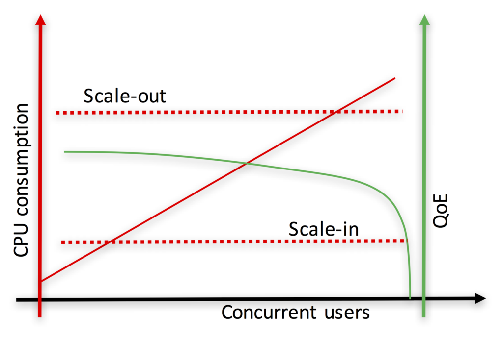
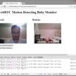

Media servers, server-side media handling devices, continue to be a popular topic of discussion in WebRTC. One reason for this because they are the most complex elements in a VoIP architecture and that lends itself to differing approaches and misunderstandings. Putting WebRTC media servers in the cloud and reliably scaling them is even harder. Fortunately there are several community experts with deep expertise in this domain to help. One of those experts who has always been happy to share his learnings is past webrtcHacks guest author Luis López Fernández.
Luis is a professor at Rey Juan Carlos University, founder of the open source kurento.org and nubomedia.org projects, and now has started a commercial company around some of these technologies.
Warning: there is a ton of content in this post. It is not a quick read, but you will come away educated on this topic with great practical advice from years of research. Read on for topics including:
- How media servers are different than common cloud elements
- What NFV is and why you don’t really need to worry about it
- Virtual Machines vs. containers (i.e. Docker)
- Dealing with virtualization when you need real-time
- Scalability metrics for RTC applications
- Debugging in the cloud
Have at it!
{“editor”, “chad hart“}

From WebRTC media servers to WebRTC clouds: our history
Five years ago we launched Kurento Media Server: a stand-alone WebRTC modular media server (see the webrtcHacks post on this here). Thanks to a growing open source community, Kurento rapidly gained traction. As developers were installing and using Kurento, we noticed an increasing interest for pushing it to the cloud. The demand for features such as autoscaling, configurability, runtime monitoring and dockerization skyrocketed, so we decided to evolve our technology towards the cloud. This materialized into NUBOMEDIA and elasticRTC. NUBOMEDIA is an open source PaaS (Platform as a Service) based on OpenStack and OpenShift that is specifically designed for hosting WebRTC applications. NUBOMEDIA is the result of a collaborative research project funded by the European Commission. In turn, elasticRTC is a commercial software stack exposing an elastic scalable version of Kurento through the AWS (Amazon Web Services) Marketplace.
NUBOMEDIA and elasticRTC share the objective: evolving Kurento into a WebRTC cloud. However, they follow quite different philosophies and technological approaches. The good point about this is that, having been involved in both, we have quite a broad view on the needs, problems and solutions associated to the cloudification of WebRTC infrastructures. In this post we try to explain our experience and lessons learnt during the process introducing a number of problems and the solutions and workarounds we’ve found for them.
Architecting WebRTC infrastructure in the cloud
The architecture of a WebRTC service is not much different than that of traditional web application. It can be understood as a three tiered system following the scheme depicted in Fig. 1.
{kind=link}
Fig. 1. The architecture of a WebRTC system can be represented through a three-tiered model equivalent to the one of Web applications.
WebRTC service“cloudification” consists of two layers:
- the Signaling layer (i.e. Application server) and the
- Media Services layer.
Creating a cloud Application Server is not too complex and it can be carried out using standard cloud orchestration techniques as long as the application logic remains stateless.
Cloudification of Media Services is harder as Media Servers are inherently stateful. This means that a client session cannot be moved easily among different media servers while the session is ongoing. Typical load-balancing and replication techniques that web applications rely on cannot simply be reused.
Media Resource Broker
Instead, network-based media servers use a special type of load balancer that keeps track of (at least part of) the session state. In the IETF, this is called a Media Resource Broker (MRB). The concept of MRB was formally introduced in RFC 6917 and, as illustrated on Fig. 2, has two main flavors: in-line and query; each having advantages and drawbacks.
In addition to load-balancing, the MRB can also take care of other functions, such as:
- autoscaling – scaling-in and -out the media resources for adapting to the offered load
- resource provisioning – reserving, launching and managing the underlying computing infrastructures where the media servers execute
- deployment – performing the appropriate actions for deploying and managing the lifecycle of media server processes
- quality-of-service control – enforcing SLAs or other types of differentiated quality mechanisms
Developing a MRB from scratch is a huge effort. One needs to design and implement many complex software pieces that coordinate interactions between the underlying cloud infrastructures, call signaling, and media servers. If you have millions of dollars in your pocket this might be your choice. However, if you don’t want to re-invent the wheel, there are existing technologies that you can leverage instead.

Fig. 2. Common configurations for deploying Media Server (MS) instances in the cloud through a Media Resource Brokers (MRB) based architecture.
Network Function Virtualization
One of these is ETSI’s Network Function Virtualization (NFV). NFV comprise a set of standards created with the aim of putting order in the clouds. NFV is mainly supported by telecommunication operators and has a strong bias towards satisfying telco-related needs. This is good enough for our objectives since the architecture of a typical WebRTC system is not too different to the architecture of any modern telecommunication infrastructure.
Acronym soup
In the NFV specification, the media server instances that are managed by the MRB (as shown on Fig. 2) comprise a so called Network Service. A Network Service is a set of orchestrated VNF (Virtual Network Functions). In our case, the Network Service has just one VNF. Each media server instance is a VNF instance. For launching a VNF you need to describe it through a VNF Descriptor (VNFD) that specifies how your VNF is to be deployed, managed, orchestrated and scaled. The component of the VNF architecture that process the VNFD is the NFVO (Network Function Virtual Orchestrator). It does it with the support of a VNFM (Virtual Network Function Manager) that performs all the appropriate operations enabling the deployment, provisioning, execution, scaling and SLA (Service Level Agreement) management of a VNF.
The nice part of NFV is that, once you have described how your NFV behaves, the NFVO and VNFM will take care of executing the appropriate actions for enforcing the described behavior. For this, these components fully abstract the underlying cloud infrastructure. Once setup, you don’t need to worry about the specific details on how the underlying IaaS (Infrastructure as a Service) is managing or exposing the computing and networking resources.
Now forget the acronyms
As you can appreciate after this brief explanation, the NVF standard is not trivial. You’ll need first to digest the alphabet soup of all of its acronyms before you can start to understand it. Fortunately, the good news is that you don’t really need to mind all these gory details since there are open source software NFV implementations that have done the hard work already.

Fig. 3. NFV (Network Function Virtualization) comprise a set of standards specifying how to deploy, manage and orchestrate virtual network services. Following the NVF specification, a cloud WebRTC media plane can be seen as a network service comprising one virtual network function.
NUBOMEDIA is a WebRTC PaaS fully based on NFV. For this, we have used OpenBaton: a full implementation of the NFVO/VNFM specification that provides all the MRB features required for managing Kurento Media Server instances in an scalable way. As a result, NUBOMEDIA developers do not need to worry about any of the low level details of the media plane. When they need a media server instance, OpenBaton just makes sure it is ready. (See the NUBOMEDIA official documentation for more details).
Virtualization vs containers: the problem of real-time performance
Containers are one of the major innovations in cloud computing with Docker in particular. Containers bring many advantages thanks to the vast amount of service images and orchestration tools that have emerged during the last couple of years. In addition, the ability of Docker to work closer to metal brings performance advantages that may be relevant for services that, like WebRTC, are very sensitive to real-time. However, containers are still an experimental feature and many cloud vendors do not fully support their complete feature-sets.
Many developers wonder whether it is worth using containers for their WebRTC services. Unfortunately, performance data comparing virtual machines and docker is not widely available and obtaining it is quite a complex process.

Fig. 4. Cloud architecture based on traditional virtualization (left) versus cloud architecture based on containers (right).
To shed some light, we performed several experiments comparing different performance and QoS (Quality of Service) metrics of WebRTC infrastructures for the NUBOMEDIA project. These experiments are based on an OpenStack IaaS. We looked at two scenarios.
Media routing
In the first scenario we looked at typical conditions for multiparty video applications that use a SFU (Selective Forwarding Unit). We deployed a SFU capability into a NUBOMEDIA cloud and added WebRTC legs sequentially creating a one-to-many WebRTC communication topology (i.e. one single master stream is routed to many receivers). We added one WebRTC leg per second during 50 seconds. For comparison, we deployed into a KVM-based virtual computing node holding one vCPU core and on a Docker container holding one CPU core.
Media transcoding
In this test we looked at typical conditions requiring transcoding such as media mixing scenarios and codec interoperability. Here we deployed an application performing VP8 decoding followed by a VP8 re-encoding. We added one WebRTC session to the application until we arrive at 15 transcodings in 15 seconds. For comparison here we use a KVM-based virtual computing node holding 4 vCPU cores and a Docker container holding 4 CPU cores.
Test Results
Both tests were performed on an OpenStack (Kilo). The Physical machines are based on an Intel Xeon E5345 @2.3GHz x 2 configuration. We looked at the following every second for 53 seconds:
- CPU utilization of the WebRTC infrastructure (i.e. the Kurento process)
- Average cloud latency (i.e. time elapsed since a given media frame gets into the WebRTC cloud until that frame gets out of it).
The results of these experiments are illustrated in Fig. 5, in which we depict KVM (blue) and Docker (orange) CPU and cloud latency for the two scenarios.
As it can be observed, Docker outperforms KVM in all cases.
{kind=link}
{kind=link}
![Fig. 5. Comparison between Docker and KMV performance for a scenario implementing a media routing capability (top) and for a scenario implementing a media transcoding capability (bottom). For media routing, we use a Kurento SFU for creating a one-to-many communication topology through which a master WebRTC VP8 stream is routed to many receivers without modifying the media encoding. As it can be observed (top-left) the Docker CPU consumption of the Kurento process is consistently under the KMV CPU utilization, being the Docker average performance improvement of around 20%. Docker also outperforms KMV in terms of cloud latency (top-right) meaning that the time a media packet takes to get through the SFU is around 15% less with Docker. For media transcoding, we use a Kurento process performing first a VP8 decoding and then a VP8 encoding on every WebRTC back-to-back session. We add 15 WebRTC sessions with a separation of 1 second among each other. As it can be observed (bottom-left), both the Docker and the KMV CPU average CPU utilization skyrockets (100% is the maximum possible utilization) and both machines get overloaded. However, the Docker CPU utilization seems to be lower and more stable when high levels of overload are present. It is remarkable that, when the overload persists, KVM CPU utilization of the Kurento process decreases, which indicates that the operating system is requiring more CPU resources just for maintaining the process running. From the latency perspective (bottom-right), clearly the KVM machine gets overloaded long before the Docker one, that seems to be able to generate bigger transcoding throughput and to maintain bounded the internal media server queues for higher loads. As a result, we can conclude that Docker outperforms KVM in all scenarios.](https://webrtchacks.com/wp-content/uploads/2016/09/fig5-bottom-right.png)
 .
.
Fig. 5. Comparison between Docker and KMV performance for a scenario implementing a media routing capability (top) and for a scenario implementing a media transcoding capability (bottom). For media routing, we use a Kurento SFU for creating a one-to-many communication topology through which a master WebRTC VP8 stream is routed to many receivers without modifying the media encoding. As it can be observed (top-left) the Docker CPU consumption of the Kurento process is consistently under the KVM CPU utilization, with an average performance improvement on Docker of around 20%. Docker also outperforms KMV in terms of cloud latency (top-right) meaning that the time a media packet takes to get through the SFU is around 15% less with Docker. For media transcoding, we use a Kurento process performing first a VP8 decoding and then a VP8 encoding on every WebRTC back-to-back session. We add 15 WebRTC sessions with a separation of 1 second among each other. As it can be observed (bottom-left), both the Docker and the KMV CPU average CPU utilization skyrockets (100% is the maximum possible utilization) and both machines get overloaded. However, the Docker CPU utilization seems to be lower and more stable when high levels of overload are present. It is remarkable that, when the overload persists, KVM CPU utilization of the Kurento process decreases, which indicates that the operating system is requiring more CPU resources just for keeping the process running. From the latency perspective (bottom-right), clearly the KVM machine gets overloaded long before the Docker one. Docker seems to be able to generate bigger transcoding throughput and to maintain bounded the internal media server queues for higher loads. As a result, we can conclude that Docker outperforms KVM in all scenarios.
A very relevant difference you will find between Docker and KVM is machine startup time. While in Docker launching a new container takes less than 2 seconds, the startup time of a KVM virtual machine is typically over 1 minute. This makes a significant difference at the time of absorbing load peaks through autoscaling mechanisms.
Docker wins, but…
Hence, from a technical perspective, Docker seems to be a better solution than traditional virtualization hypervisors such as KVM for the deployment of WebRTC services. However, from a practical perspective there are still limitations. For example, in AWS (and at the time of this writing) Docker can only be used on top of XEN, which means that most of the performance improvements above described disappear (which is why we decided not to use Docker for elasticRTC).
Using Docker on top of bare-metal in OpenStack is possible which we did in the NUBOMEDIA project. However, again, we needed to solve a number of issues. The most relevant one is that nova-docker, which is the Docker hypervisor driver for OpenStack Nova Compute, is immature and is missing some important features. In particular, the inability of nova-docker to made available in runtime new Docker images to all computing nodes. Solving this issue required that we manually login on all such computing nodes and run docker pull image-name in order to have the image available. Due to this, we needed to patch nova-docker with a python application that pulls all Docker images from a public repository on all compute nodes that run Docker as hypervisor. This patch can be found in the NUBOMEDIA GitHub repository.
Virtualized networks
Network virtualization is a very complex topic. I’m not an expert on it so I will not be able to provide a complete explanation on all the how’s and why’s. However, I can provide you some intuitions illustrating why virtualized networks are THE problem when trying to obtain optimal QoE in your WebRTC cloud deployments.
At its core, virtual computing is about letting software pretend to be hardware. Virtual networks are the same except software plays the role of networking hardware like network cards, switches, routers, etc. When a packet travels on a virtual network it gets through virtual interfaces, virtual switches and virtual routers that emulate the behavior of their hardware counterparts. Although many of such virtual components may operate with hardware support, virtual networks are still far from the performance offered by their physical counterparts.
Testing your throughput
Let’s concentrate on a specific network performance metric that is very relevant for WebRTC: throughput. The throughput can be defined as the maximum bandwidth for communicating. A common tool for measuring throughput is the comand line tool iperf.
To start, I’m going to use iperf for measuring the throughput between two laptops that I connect through a physical 100Base-T Ethernet network. As UDP throughput is very sensitive to packet size, I’m going to assume a WebRTC scenario in which I perform only audio transmission. Roughly speaking, a WebRTC audio packet is around 100Bytes. Hence, I’ll use that packet size. I perform the experiment by executing in one of my laptops (with IP 192.168.56.123)
Then, on the other:
Not too bad. This means that my two physical machines can communicate WebRTC audio at around 48.2Mbps. Considering that a typical WebRTC audio session consumes around 40Kbps, my physical network could support up to 48.2/0.04=1,205 concurrent WebRTC audio sessions, which is a reasonable number of concurrent for a media server.
Now, let’s repeat the experiment replacing one of the physical laptops with a VirtualBox node, so that I establish a physical-to-virtual link. The result is the following:
As you can see, due to the introduction of a virtual network interface, the throughput has dropped more than 50%. Hence, the number of concurrent WebRTC audio sessions that my virtual machine could stand is around 20.9/0.04 = 522.
Why virtual networks hurt RTC
In our experience, this performance reduction takes place consistently across all common network virtualization technologies, which means the vertical scalability of your WebRTC infrastructure will be just a fraction of the one you might be obtaining by deploying onto bare-metal. The conclusion you might extract from this is that your WebRTC cloud deployments must be ready for horizontal scalability. Deploying into very powerful computing nodes may make no sense as in many cases you will find that the vertical scalability bottleneck is in the network bandwidth and not in the CPU consumption.
Another very relevant problem we have detected when working with virtual networks is packet loss. In a physical network UDP packet loss typically take place at the network interface. For example, whenever the operating system writes faster than the speed of the interface for sending to the network or at routers when queues saturate due to network congestion. In both cases, the problem is that packets arrive at a higher speed than they can be processed. Packet loss in virtual networks have the same cause. However, they tend to be more noticeable than in physical infrastructures due to the reduced throughput of virtual links.
Traffic peaks with 2 users
This problem becomes very noticeable when you have sharp traffic peaks. One use case that reproduces this easily is high-quality screen sharing. This is illustrated in Fig. 6, where we show how sharp traffic peaks associated to high-quality screen-sharing scenarios tend to generate noticeable packet losses in virtual networks.
{kind=link}
Figure 6. WebRTC internals of a Chrome browsers used in an experiment performed in an AWS c3.large machine showing running a Kurento SFU room application. A WebRTC session (presenter) joins the room and starts high-quality screen sharing of a browser. Another WebRTC session (viewer) joins the room and receives the high-quality screen sharing stream. Whenever the presenter switches between browser tabs, a very sharp traffic peak is generated. At the viewer WebRTC internals we can see the sharp traffic peak (bitsReceivedPerSecond) that produces packet loss (googNacksSent), which in turn make the viewer to ask for a resynchronization (googPlisSent). In our experiments, the same sharp traffic peak is absorbed without problems when deploying in a physical network.
Quick fixes
There are mechanisms for minimizing the effects of packet loss on virtual networks. We have found that increasing the kernel network buffers on the virtual computing nodes may reduce packet drops. For example, in Linux:
Avoiding packet loss at virtual switches and routers is much more complex. Current state-of-the-art clouds do not offer access to modify switch queue configurations. The use of Software Defined Networking (SDN) may be helpful for prioritizing WebRTC traffic over other types of traffic, and this is one of the research areas where we are investigating in the context of the NUBOMEDIA project.
Autoscaling
Autoscaling is a built-in feature of most modern cloud orchestration technologies. AWS has CloudFormation. OpenStack has Heat. Autoscaling enables optimizing the resources consumed by a system so that they automatically adapt to the end users’ offered load. At a minimum it must instantiate new virtual computing resources (i.e. scaling out) and removes them (i.e. scaling in) basing on scaling rules. Most of the time, the rules are of the type “Whenever the average CPU utilization of my system is over 60%, then instantiate 3 new virtual computing nodes” or “If the average CPU utilization is under 30%, then remove 1 virtual computing node”.
Current tools weren’t made for RTC
Rules based on average CPU utilization are very common for the autoscaling of web services and systems. These rules work nicely there, but not for WebRTC infrastructure because WebRTC services are more heterogeneous. Often one hits other limits before starving the CPU. For example, in our experiments with Kurento, services that only provide media routing capabilities (e.g. multiparty videoconferencing based on SFUs) have the scaling bottleneck in the network. However, whenever the WebRTC service provides some kind of media processing (e.g. media mixing mixer or media transcoding) then typically CPU is the critical parameter. In other words, the autoscaling rules of WebRTC cloud systems are application-dependent and even session-dependent. To be effective different set of rules need to be combined in complex ways depending on application-specific runtime information. This significantly increases the complexity of the rule-set making requirements.
Also, when CPU is the bottleneck (e.g. services involving media processing) the granularity of sessions is much coarse grained than in typical Web applications and services. This is illustrated in Fig. 7 – the CPU increase of a new incoming session may be significant and noticeable on the overall system (e.g. a video HD transcoding may easily require 100% of a vCPU). As a result, when a threshold-based rule fires a scaling-out event, it might be too late for keeping the QoE of users under reasonable bounds since a session might be already placed at an overloaded computing node.

{kind=link}
Fig. 7. On the top, we can see the typical autoscaling behavior of Web applications and services. As the number of concurrent users (i.e. sessions) increase (straight red line), the perceived QoE decreases (curved green line). When the CPU consumption hits the scale-out threshold, the system can still accept some additional sessions while the new virtual computing resource is instantiated without significantly affecting the QoE of users. On the bottom we can see the equivalent curves for WebRTC services involving media processing. As media processing is very CPU intensive, every new session brings a significant CPU increase (stair-like red curve). Hence, in many occasions, when the Scale-out threshold is hit, it is too late as some of the computing nodes will be already overloaded and their corresponding end-users will be perceiving a very degraded QoE.
An additional problem that makes WebRTC autoscaling complex is dealing with scaling-in events. In stateless Web applications and services, scaling-in means just removing some of the virtual computing resources. As session state is shared among all the virtual computing nodes, we may remove some of them at random times without affecting the ongoing sessions. However, WebRTC media sessions are stateful, hence, removing a media server node holding active ongoing sessions is not possible without breaking such sessions. This means that the scaling-in events must be managed carefully so that we guarantee that the removal of media server nodes only take place when such nodes are empty (i.e. they do not hold any media session).
Alternative scaling metrics
Solving the above mentioned problems while maintaining compatibility with current autoscaling technologies is challenging. Both in NUBOMEDIA and in elasticRTC we have decided to create an abstraction for doing this. This abstraction is based on something that we call “scaling points”. These scaling points are a property of a session, which means that developers need to provide in their code the logic suitable for assigning to every session the scaling points it consumes.
The WebRTC infrastructure then publishes such points as a system metric (e.g. through CloudWatch) that can be used for the definition of autoscaling rules. For example, whenever the average scaling points on my machines is over 300, then instantiate 3 new computing nodes; or if the scaling points of a machine are zero, then remove such machine.
Instead of relying on CPU utilization, we rely on scaling points for defining our autoscaling logic. This simplifies significantly such logic as the scaling points are an abstraction that can take into consideration any system bottleneck we may imagine. The drawback is these scaling points are difficult to get right. Developers need some experience and experimentation for setting up them as their value may depend of disparate aspects such as the flavor of virtual machines being used or the media services a session is consuming. Due to this, Kurento Media Server provides conservative built-in scaling points defaults, which are not optimal but enable newbies to create their auto-scalable applications without worrying about his topic until they gain the appropriate expertise.
Monitoring, diagnosing and debugging
We have described different problems you may find when deploying WebRTC services in the cloud. All of them are a piece of cake compared to debugging. Typical bug reports coming from users are of the type “from time to time the video is choppy”. Basing on this description, you’ll need to figure out how to proceed. Sometimes the root cause of the problem is fully out of your control like a low quality access link. Often it can also be problems in your infrastructure – e.g. lack of performance of virtual networks – or in your software stack – e.g. incorrect management of RTCP feedback in your code.
Resolving these kinds of problems requires analyzing a huge amount of data. The logs of the different software components are useful for this purpose but they are typically not enough. Due to the real-time nature of WebRTC you also need traffic metrics suitable for evaluating how the network is behaving (e.g. latency, packet loss) and how the media infrastructure is reacting (e.g. NACKs, PLIs, etc.) When developing a simple peer-to-peer service, tools such as chrome://webrtc-internals are often enough. Cloud infrastructure that supports thousands of concurrent sessions requires something more complex.
In this context, you need to the tackle the problem as a big data problem. This means that you need to put in place two capabilities:
- the ability to gather and store metrics from all around your system so that, at any time, you can take a snapshot of it and understand what’s happening
- tools to visualize, navigate and analyze all the collected information
Tools
In NUBOMEDIA, we use a number of tools that collect and consolidate the data. For example, we use icinga for collecting different types of metrics from our infrastructure including physical and logical indicators such as CPU consumption, energy consumption, hard drive utilization, etc. We also use Logstash for collecting the logs of our WebRTC applications and of the Kurento Media Server instances that they utilize.
However, as stated above, this is not enough and finer grained information about the network traffic of each WebRTC session is required. For this, we extended Kurento Media Server to publish QoS metrics of all the WebRTC sessions it manages. These extensions are fully based on the W3C WebRTC Stats specification. This means that for any WebRTC session maintained between a browser and the media server, you can collect two sets of stats: the ones as seen by the browser and the ones as seen by the media server. These two are complementary and give quite a complete picture of what’s happening to the media traffic.
All such stats are collected in real-time and fed to Graphite, where they can be stored and visualized in quite a simple way.
{kind=link}
Fig. 8 Snapshot of the NUBOMEDIA infrastructure monitoring tool based on icinga.
Data crunching
As a result, we collect a huge amount of data in NUBOMEDIA. Making sense of all such data is a complex black art for which we have not been able to find really helpful tools. Hence, when a developer wants to diagnose a problem, she needs to make intensive use of his intuition for diving into gigabytes of data with the hope of finding a clue enabling to gain some insight into the problem. Depending on the expertise of the developer, this may sometimes spawn during days or even weeks of crunching numbers, graphs and logs where the data of all the sessions, the defaulting and the correct ones, mix in convoluted ways.
Replication
Many developers prefer to isolate the problem and to face it in real-time. For this, the typical strategy consists on setting up a separated instance of the WebRTC cloud, not accessible for users, where developers can inject the appropriate instrumentation for emulating the specific conditions that make the problem to emerge so that in can be analyzed in isolation. This is also a black art that requires deep understanding on the different components of the architecture. It also requires system engineering skills for forcing the appropriate behaviors on both networking and computing infrastructures. In our experience, and as long as the conditions arising the problem are known, this approach tend to be less frustrating and more efficient for the diagnosis of complex problems.
Conclusion
During the last few years WebRTC has been concentrated on the client-side of problem. In that area, a great job has been performed and many WebRTC client-side implementations are in production by billions of users. Now, the time of WebRTC infrastructures has come. During the next few years I expect we will witness an explosion of technologies for deploying WebRTC in the cloud. Pay attention to all information related to standardization of WebRTC architectures. Keep an eye in all topics related to the applications SDNs for WebRTC. And developers, don’t forget that your main problems will always be related with the monitoring and debugging of applications. If you keep this in mind you will make wiser decisions when creating your very own WebRTC infrastructures or when selecting the appropriate third parties for your WebRTC applications.
{“author”: “Luis López Fernández“}
Want to keep up on our latest posts? Please click here to subscribe to our mailing list if you have not already. We only email post updates. You can also follow us on twitter at @webrtcHacks for blog updates.
Related Posts
 Kurento.org: WebRTC, Computer Vision, Augmented Reality, Awesome (Luis López Fernández)
Kurento.org: WebRTC, Computer Vision, Augmented Reality, Awesome (Luis López Fernández)- The Open Source rfc5766-turn-server Project – Interview with Oleg Moskalenko
- What is a WebRTC Gateway anyway? (Lorenzo Miniero)
- WebRTC beyond one-to-one communication (Gustavo Garcia Bernardo)
- How to Build a Motion Detecting Baby Monitor with WebRTC
- Can an Open Source SFU Survive Acquisition? Q&A with Jitsi & Atlassian HipChat
Good article, we use dedicated servers at voximplant to avoid number of issues, but if you want to scale something fast having additional capacity in form of VMs make sense.
And Kurento has just been acquired by Twilio https://techcrunch.com/2016/09/20/twilio-acquires-kurento-and-launches-voice-insights-for-monitoring-webrtc-performance/
Pingback: RealTimeWeekly | RealTimeWeekly #148